iSMART Education · Dành cho giáo viên
Hướng dẫn cấp mã và chấm bài kiểm tra xếp lớp iLEAD
Toàn bộ việc của giáo viên làm trên trang Chấm điểm học viên: cấp mã cho học sinh, chấm Writing Part 2 và Speaking, hoàn thiện báo cáo gửi phụ huynh.
- Tạo mãMỗi học sinh một mã
- Gửi mã / linkQua Zalo, tin nhắn
- Học sinh làm bàiMáy tự chấm Listening, Reading, Writing 1
- Chấm Writing 24 câu, mỗi câu 0–3 điểm
- Chấm Speaking0–20 điểm, có thể chấm sau
- Hoàn thiện báo cáoPhụ huynh tra cứu bằng mã
1Mở trang chấm điểm
Mở link trang chấm điểm do trung tâm gửi (nên dùng máy tính, trình duyệt Chrome hoặc Edge). Nếu link dài và có đoạn ký tự phía sau dấu #, luôn giữ nguyên cả đoạn đó khi mở hoặc lưu dấu trang, thiếu là trang báo không mở được.
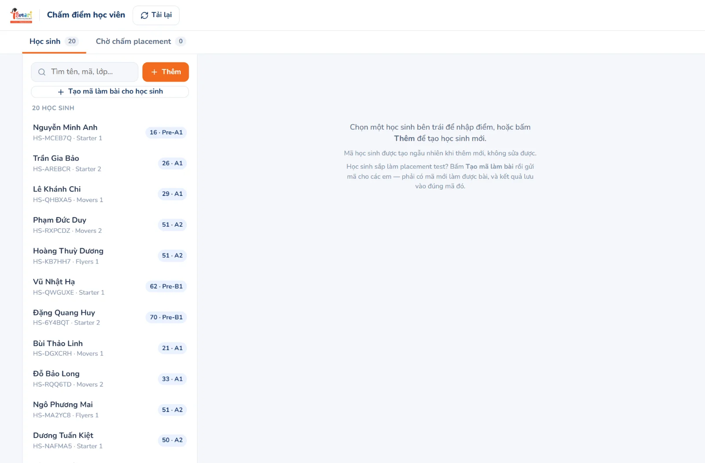
| Khu vực | Dùng để |
|---|---|
| Tab Học sinh | Xem tất cả học sinh, tạo mã, sửa điểm, chọn mô tả, viết lộ trình. |
| Tab Chờ chấm placement | Những bài học sinh đã nộp nhưng còn thiếu điểm Writing Part 2 hoặc Speaking. Số màu cam cạnh tên tab là số bài đang chờ. |
| Nút Tải lại | Lấy danh sách mới nhất, ví dụ khi học sinh vừa nộp bài. |
| Ô tìm kiếm | Gõ tên, mã hoặc lớp để lọc nhanh danh sách. |
2Tạo mã làm bài
Học sinh bắt buộc có mã mới vào làm bài được. Mỗi mã dùng một lần, kết quả lưu vào đúng mã đó.
- Ở tab Học sinh, bấm + Tạo mã làm bài cho học sinh.
- Nhập Số lượng mã (1 đến 60), bằng số học sinh sắp làm bài.
- Điền Thông tin (lớp, trường, cơ sở…) và Giáo viên nếu muốn. Hai ô này không bắt buộc, sẽ hiện trên báo cáo.
- Bấm Tạo mã.
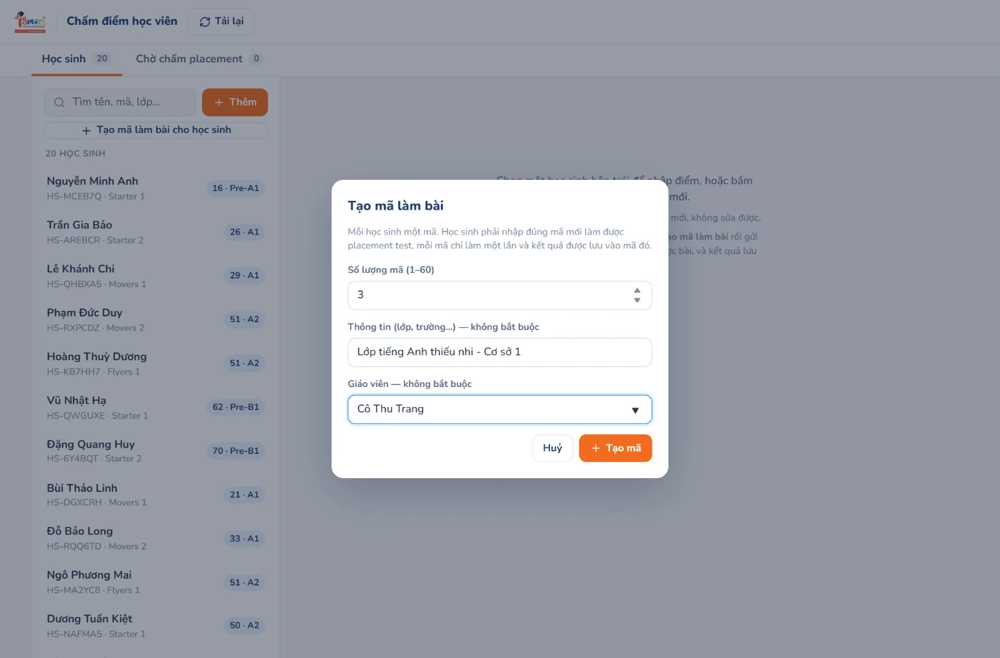
Lấy mã để gửi
Hộp hiện danh sách mã vừa tạo, mỗi mã một dòng.
- Chép link (cạnh từng mã): chép link làm bài đã điền sẵn mã đó. Gửi riêng cho từng học sinh là tiện nhất.
- Chép tất cả mã: chép danh sách mã để dán vào bảng tính hoặc tin nhắn.
- Chép mã kèm link: chép cả mã lẫn link của mọi học sinh cùng lúc.
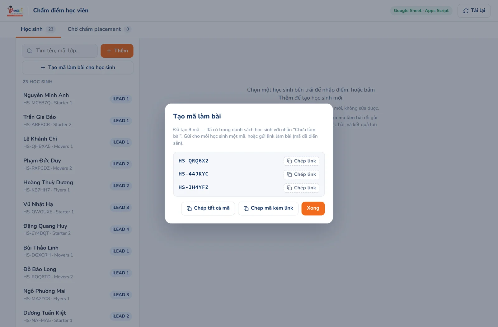
3Gửi mã và theo dõi
Mã mới tạo nằm ngay trong danh sách học sinh với tên (chưa có tên) và nhãn Chưa làm bài. Bấm vào mã đó, bên phải có nút Chép link làm bài để gửi lại khi học sinh làm mất tin nhắn.
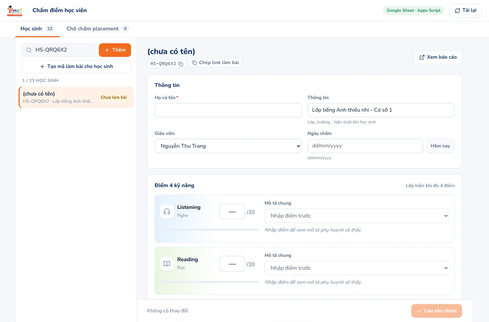
Ý nghĩa nhãn trong danh sách
| Nhãn | Nghĩa là | Việc cần làm |
|---|---|---|
| Chưa làm bài | Đã cấp mã, học sinh chưa nộp. | Nhắc học sinh làm bài. |
| Chờ Writing + Speaking | Đã nộp bài, chưa chấm gì. | Chấm ở tab Chờ chấm. |
| Chờ Speaking | Đã chấm Writing Part 2, còn thiếu Speaking. | Chấm Speaking sau khi thi nói. |
| Thiếu 2 điểm | Học sinh nhập tay còn thiếu điểm kỹ năng. | Mở học sinh, nhập nốt điểm. |
| 60.5 · Pre-B1 | Đã đủ điểm: tổng điểm và trình độ. | Phụ huynh xem được báo cáo. |
4Chấm Writing Part 2
- Bấm Tải lại để cập nhật bài mới nộp.
- Chuyển sang tab Chờ chấm placement, bấm vào tên học sinh.
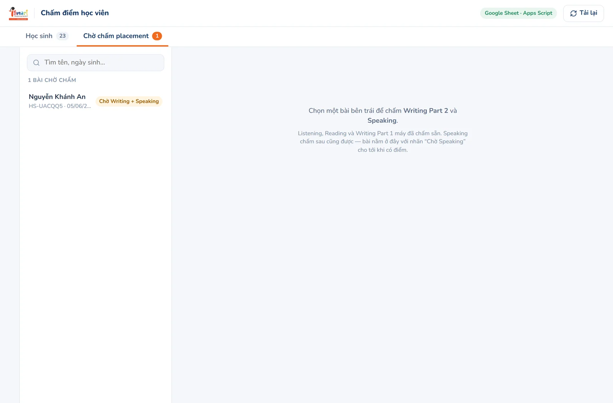
Xem phần máy đã chấm
Khung Máy đã chấm hiện sẵn điểm Listening, Reading và Writing Part 1. Bấm Xem bài làm từng câu để xem học sinh chọn gì: chữ xanh có ✓ là đúng, chữ đỏ có ✗ là sai.
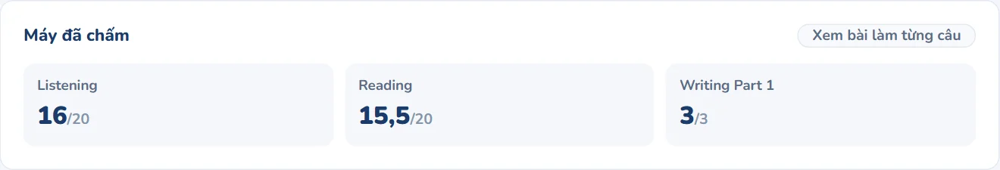
Cho điểm từng câu
Mỗi câu hiện câu hỏi, câu trả lời của học sinh (khung xanh) và đáp án gợi ý. Bấm ô 0, 1, 2 hoặc 3 để cho điểm. Tổng Writing Part 2 (tối đa 12) cập nhật ở góc phải.
| Điểm | Khi nào cho |
|---|---|
| 3 | Đúng nội dung, là câu hoàn chỉnh, ngữ pháp đúng. Cho phép một lỗi nhỏ (chính tả một chữ, quên viết hoa, thiếu dấu chấm). |
| 2 | Đúng nội dung, là câu hoàn chỉnh nhưng có lỗi ngữ pháp, hoặc từ hai lỗi nhỏ trở lên. |
| 1 | Đúng nội dung nhưng chỉ là một từ hoặc một cụm từ, chưa thành câu. |
| 0 | Sai nội dung, bỏ trống, viết tiếng Việt hoặc chép lại câu hỏi. |
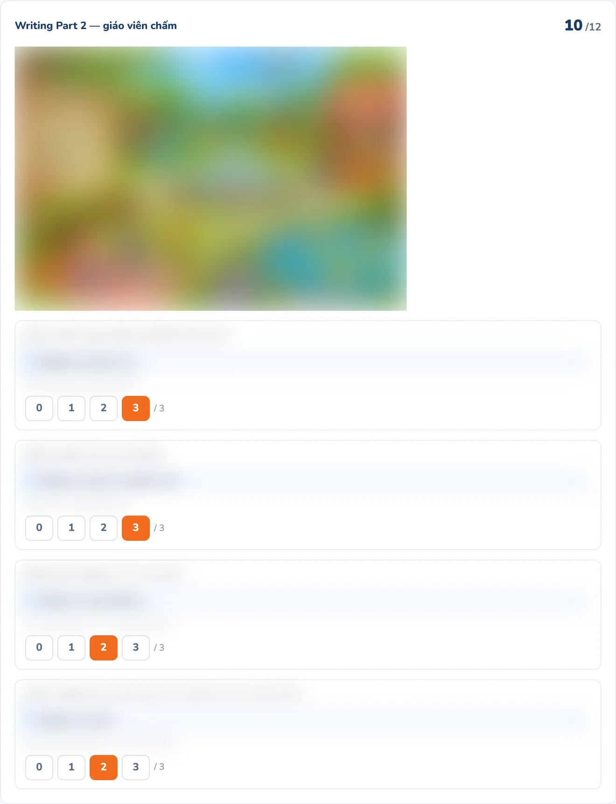
Lưu điểm Writing trước, chấm Speaking sau
Học sinh chưa thi nói thì để trống ô Speaking và bấm Lưu điểm ở thanh dưới cùng. Bài vẫn nằm ở tab Chờ chấm với nhãn Chờ Speaking, quay lại chấm sau.
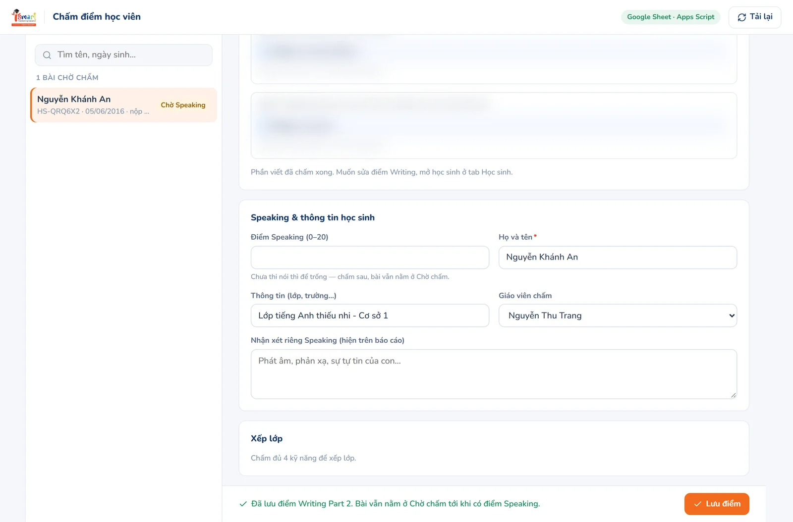
5Chấm Speaking và xác nhận kết quả
- Mở bài ở tab Chờ chấm placement (nhãn Chờ Speaking), kéo xuống khung Speaking & thông tin học sinh.
- Nhập Điểm Speaking từ 0 đến 20 (cho phép nửa điểm, ví dụ 15,5).
- Kiểm tra lại Họ và tên, Thông tin, Giáo viên chấm. Sửa nếu học sinh gõ sai.
- Viết Nhận xét riêng Speaking: phát âm, phản xạ, sự tự tin. Đoạn này hiện nguyên văn trên báo cáo cho phụ huynh.
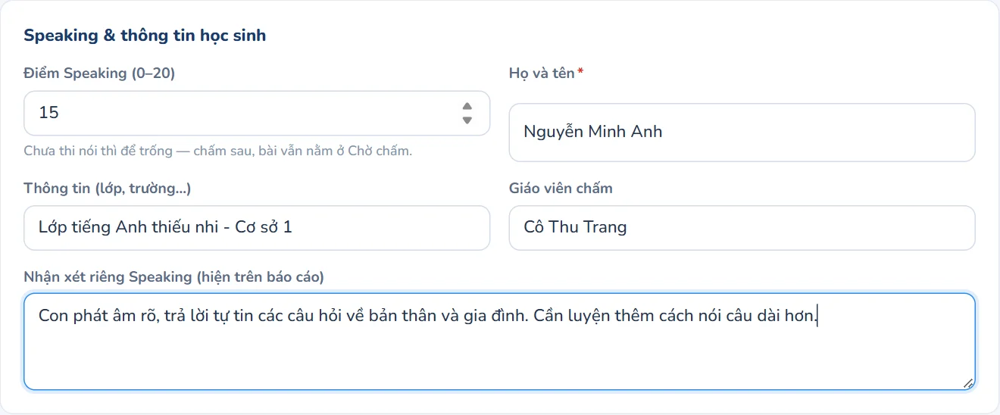
Xếp lớp
Khi đủ điểm, khung Xếp lớp hiện điểm 4 kỹ năng, tổng điểm / 75 và các lớp iLEAD. Lớp có ghi Hệ thống gợi ý là lớp tính theo tổng điểm. Giáo viên là người quyết định lớp cuối cùng:
- Đồng ý với gợi ý: giữ nguyên, không cần bấm gì.
- Thấy lớp khác phù hợp hơn (ví dụ tổng điểm đạt iLEAD 3 nhưng Speaking còn yếu): bấm vào lớp đó, ví dụ iLEAD 2. Muốn quay lại thì bấm Dùng lớp gợi ý.
- Bấm Xác nhận kết quả, kiểm tra tổng điểm và lớp ở hộp hỏi lại, rồi bấm OK.
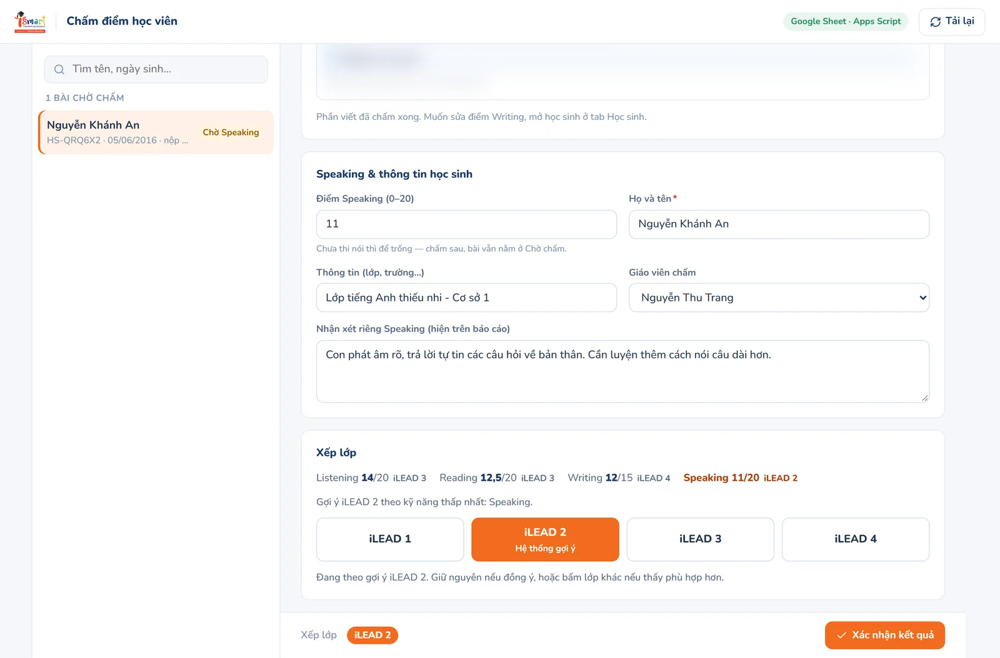
6Hoàn thiện báo cáo
Xác nhận xong, trang tự chuyển sang tab Học sinh và mở đúng học sinh đó. Kiểm tra thông tin và Ngày chấm (bấm Hôm nay để điền nhanh).
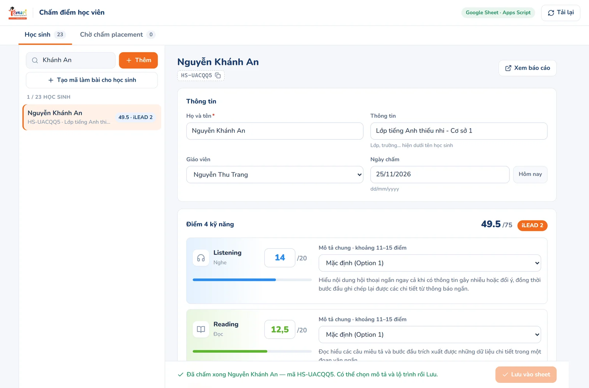
Chọn mô tả cho từng kỹ năng
Mỗi kỹ năng có ô Mô tả chung. Khoảng điểm do điểm số quyết định, giáo viên chỉ chọn một trong các cách diễn đạt (Option) cho phù hợp với học sinh. Câu mô tả phụ huynh sẽ thấy hiện ngay bên dưới. Để Mặc định cũng được, báo cáo vẫn đầy đủ.
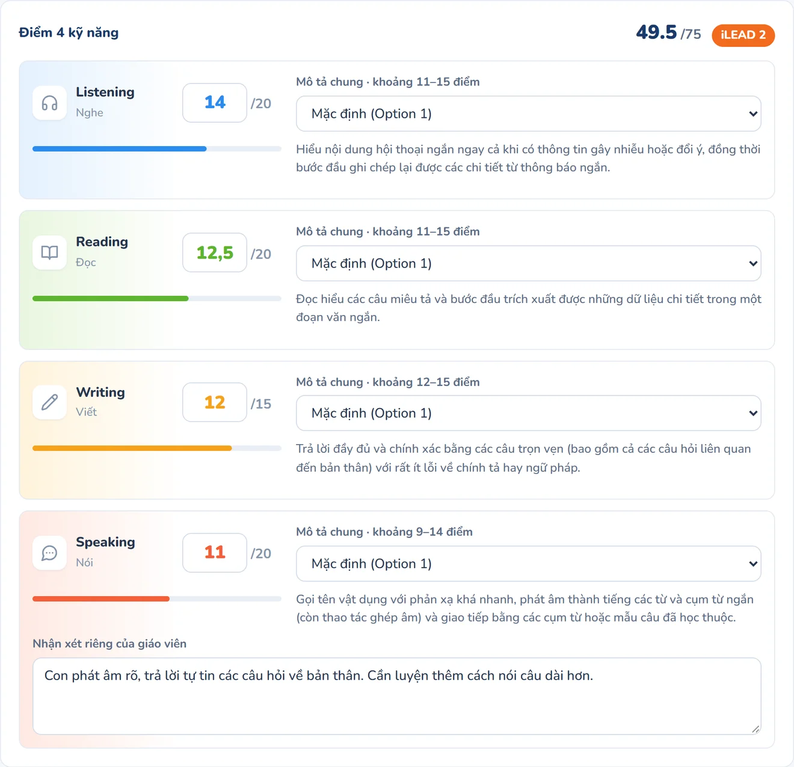
Viết lộ trình và lưu
- Kéo xuống khung Lộ trình học tập, viết nhận xét lộ trình cho học sinh (không bắt buộc).
- Bấm Lưu vào sheet ở góc dưới bên phải. Nút chỉ sáng lên khi có thay đổi chưa lưu.
- Bấm Xem báo cáo ở góc trên để xem đúng trang phụ huynh sẽ thấy.
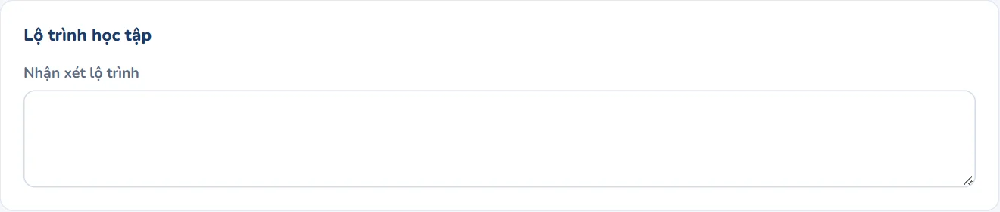
7Sửa điểm, thêm học sinh
Sửa điểm hoặc thông tin
Ở tab Học sinh, tìm và bấm vào học sinh, sửa ô cần sửa (kể cả lớp ở khung Xếp lớp), rồi bấm Lưu vào sheet. Thanh dưới cùng ghi “Có thay đổi chưa lưu” khi còn việc phải lưu. Rời sang học sinh khác khi chưa lưu, trang sẽ hỏi lại trước khi bỏ thay đổi.
Thêm học sinh không làm bài online
Bấm nút cam + Thêm, điền họ tên, điểm 4 kỹ năng, rồi bấm Lưu vào sheet. Đủ 4 điểm thì khung Xếp lớp hiện gợi ý để giáo viên giữ hoặc đổi. Hệ thống tự tạo mã học sinh để gửi phụ huynh tra cứu. Bấm biểu tượng chép cạnh mã để chép.
8Phụ huynh xem kết quả
Gửi phụ huynh mã học sinh và link trang Tra cứu Kết quả học tập. Phụ huynh nhập mã, bấm Xem Báo Cáo Kết Quả là thấy báo cáo, có thể in hoặc lưu PDF.

9Câu hỏi thường gặp
Học sinh đã nộp bài nhưng không thấy trong tab Chờ chấm
Bấm Tải lại ở góc trên. Vẫn không thấy thì tìm mã của học sinh ở tab Học sinh: nếu nhãn vẫn là “Chưa làm bài”, học sinh chưa nộp thành công, nhờ học sinh mở lại link và bấm Nộp lại.
Học sinh báo “Mã học sinh không đúng”
Kiểm tra học sinh gõ đúng mã chưa (hay nhầm số 0 với chữ O). Cách chắc nhất là gửi lại bằng nút Chép link làm bài, mã sẽ được điền sẵn.
Học sinh báo “Mã này đã được dùng”
Mã đó đã nộp bài. Mỗi mã chỉ làm một lần. Nếu cần cho học sinh làm lại, tạo mã mới và gửi lại.
Muốn sửa điểm Writing Part 2 sau khi đã lưu
Phần đã chấm bị khoá ở tab Chờ chấm. Mở học sinh ở tab Học sinh, sửa ô điểm Writing (tổng của Part 1 và Part 2, tối đa 15), rồi Lưu vào sheet.
Ô Mô tả chung ghi “Nhập điểm trước”
Kỹ năng đó chưa có điểm. Nhập điểm xong, danh sách mô tả sẽ hiện ra.
Sửa điểm rồi thì lớp có tự đổi theo không?
Không. Lớp giáo viên đã chốt được giữ nguyên, chỉ phần gợi ý đổi theo điểm mới. Nếu hai lớp khác nhau, khung Xếp lớp sẽ nhắc; bấm Dùng lớp gợi ý nếu muốn đổi, rồi Lưu vào sheet.
Tổng điểm và lớp không hiện
Phải đủ điểm cả 4 kỹ năng thì mới tính tổng và xếp lớp. Kiểm tra kỹ năng nào còn trống.
Trang báo “Không mở được trang quản trị”
Link mở thiếu phần sau dấu #. Mở lại đúng link đầy đủ trung tâm đã gửi.
iSMART Education · Hướng dẫn dành cho giáo viên chấm bài kiểm tra xếp lớp iLEAD online. Ảnh minh hoạ dùng dữ liệu mẫu.